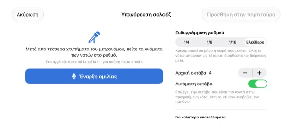
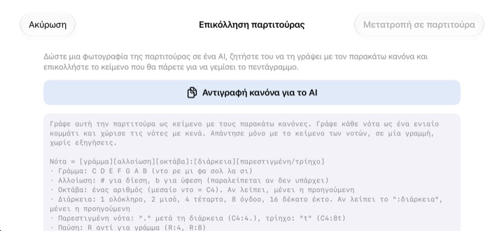

Μη μετράτε στο μυαλό σας.
Ακούστε το.
Αντιγράψτε τα δύο μέτρα που σας δυσκολεύουν και πατήστε αναπαραγωγή. Μετά από ένα μέτρο μέτρημα εισαγωγής, η εφαρμογή τα παίζει με τον μετρονόμο, με τον ρυθμό και το ύψος ακριβώς όπως είναι γραμμένα.
Όλες οι λειτουργίες είναι δωρεάν. Για iPhone και iPad.

Γράψτε μερικές νότες και ακούστε
Κρατήστε πατημένο το πεντάγραμμο και σύρετε πάνω ή κάτω για να αλλάξετε νότα. Αφήστε για να τη βάλετε. Πατήστε «Παίξε» και μετά από ένα μέτρο μέτρημα ακούγεται το αποτέλεσμα. Θα ακουστεί ήχος, ελέγξτε την ένταση.
Χαθήκατε πάλι στο μέτρημα;
Παρεστιγμένο όγδοο, μετά δέκατο έκτο, και αμέσως δίπλα ένα τρίηχο. Χτυπάτε τον ρυθμό στο γόνατο και κάπου στη μέση του μέτρου όλα μπερδεύονται. Το βράδυ πριν από την πρόβα της χορωδίας συνήθως δεν έχετε και πιάνο δίπλα σας. Με το StaffSinger αρκεί να αντιγράψετε αυτά τα δύο μέτρα για να ακούσετε τον σωστό ρυθμό και ύψος.
Ρυθμός και ύψος ακριβώς όπως είναι γραμμένα
Μετά από ένα μέτρο μέτρημα, η μουσική παίζει με τα κλικ του μετρονόμου και η νότα που ακούγεται φωτίζεται πορτοκαλί. Ρυθμίστε το τέμπο από 40 έως 200 BPM και επιλέξτε 4/4, 3/4, 2/4, 6/8, 2/2 ή 3/8.
Νότες στον ίδιο χρόνο ακούγονται μαζί ως συγχορδία, και μπορείτε να γράψετε έως τρεις φωνές. Υπάρχουν κλειδί του Σολ, κλειδί άλτο, κλειδί του Φα και οπλισμός.

Πείτε τα ονόματα των νοτών και γίνονται νότες
Μετά από τέσσερα κλικ του μετρονόμου, πείτε do re mi στον χρόνο και οι νότες μπαίνουν στο πεντάγραμμο. Αν πέφτετε πάνω στον χρόνο, καταγράφεται και η αξία: τέταρτα, όγδοα ή δέκατα έκτα. Για παύση πείτε rest.
Προφέρετε τα ονόματα στα αγγλικά. Η ομιλία αναγνωρίζεται μόνο στη συσκευή και δεν αποθηκεύεται.

Τη φωτογραφία στο AI, το αποτέλεσμα με επικόλληση
Πατήστε Αντιγραφή κανόνα για το AI, δώστε τον στο AI μαζί με μια φωτογραφία της παρτιτούρας και επικολλήστε το κείμενο που θα σας επιστρέψει. Το πεντάγραμμο γεμίζει μόνο του. Η μορφή είναι στον πίνακα παρακάτω.
Μπορείτε επίσης να φωτογραφίσετε τη χάρτινη παρτιτούρα, να την έχετε στην οθόνη και να την αντιγράφετε κοιτώντας την.

Ξεκινάτε σε τρία βήματα
- 1
Διαλέξτε τα δύσκολα μέτρα
Η εφαρμογή ανοίγει με άδειο πεντάγραμμο δύο μέτρων.
- 2
Γράψτε τις νότες
Πατήστε στο πεντάγραμμο ή παίξτε στα πλήκτρα του πιάνου.
- 3
Πατήστε αναπαραγωγή
Μέτρημα εισαγωγής και μετά αναπαραγωγή με μετρονόμο.
Μορφή κειμένου για επικόλληση
- C4:4
- Ντο στην 4η οκτάβα, τέταρτο (το μεσαίο Ντο είναι C4)
- D:8
- Χωρίς οκτάβα μένει η προηγούμενη
- F#4:8 · Bb4:4
- # για δίεση, b για ύφεση
- E4
- Χωρίς «:αξία» μένει η προηγούμενη
- :1 · :2 · :4 · :8 · :16
- ολόκληρο, μισό, τέταρτο, όγδοο, δέκατο έκτο
- C4:4.
- παρεστιγμένη νότα
- C4:8t
- τρίηχο
- R:4 · R:8
- παύσεις
Το κουμπί Αντιγραφή κανόνα για το AI στην εφαρμογή αντιγράφει ακριβώς αυτές τις οδηγίες. Χωρίζετε τις νότες με κενά.
Όλες οι λειτουργίες είναι δωρεάν
Δωρεάν
- Γραφή στο πεντάγραμμο και πληκτρολόγιο δύο οκτάβων
- Αναπαραγωγή με μέτρημα και μετρονόμο
- Συγχορδίες και τρεις φωνές
- Οπλισμός και τρία κλειδιά
- Υπαγόρευση ονομάτων νοτών με τη φωνή
- Επικόλληση κειμένου και φωτογραφία αναφοράς
Στηρίξτε τον δημιουργό
- Στείλτε ένα μικρό φιλοδώρημα από τις Ρυθμίσεις
- Το φιλοδώρημα δεν ξεκλειδώνει λειτουργίες
Δεν είναι συνδρομή. Κάθε φιλοδώρημα είναι μία πληρωμή.
Χωρίς διαφημίσεις και χωρίς λογαριασμό.
Συχνές ερωτήσεις
Πώς βάζω νότες;
Διαλέξτε πρώτα αξία στη γραμμή εργαλείων και μετά πατήστε το πεντάγραμμο στο ύψος που θέλετε. Όσο κρατάτε το δάχτυλο ακούγεται η νότα και, μόλις το σηκώσετε, μπαίνει. Με το κουμπί πληκτρολογίου ανοίγει πιάνο δύο οκτάβων.
Πώς φτιάχνω συγχορδία;
Ενεργοποιήστε το κουμπί Συγχορδία στη γραμμή εργαλείων και προσθέστε νότες. Στοιβάζονται πάνω στην επιλεγμένη νότα και ακούγονται μαζί.
Πώς διορθώνω μια νότα;
Σύρετε τη νότα πάνω ή κάτω για να αλλάξει ύψος, ή στο πλάι για να μετακινηθεί σε άλλο χρόνο. Με επιλεγμένη νότα, τα κουμπιά ♯ ♭ τη μετακινούν κατά ημιτόνιο και τα κουμπιά 8va κατά οκτάβα.
Πού αλλάζω τέμπο και ρυθμό;
Στις Ρυθμίσεις, μαζί με το κλειδί και τον οπλισμό. Εκεί ανοίγετε και κλείνετε τον μετρονόμο και το μέτρημα.
Δεν ακούγεται ήχος.
Ελέγξτε τη σίγαση και την ένταση πολυμέσων. Αν δεν ακούγεται μόνο ο μετρονόμος, βεβαιωθείτε ότι είναι ενεργός στα Βοηθήματα αναπαραγωγής, στις Ρυθμίσεις.
Η υπαγόρευση μπερδεύει τις νότες.
Φορέστε ακουστικά για να μη μπαίνει ο μετρονόμος στο μικρόφωνο και λέτε καθαρά μία νότα σε κάθε χρόνο. Μια λάθος νότα απλώς τη σύρετε.
Γιατί χρειάζεται κάμερα;
Μόνο για να φωτογραφίσετε χάρτινη παρτιτούρα και να τη βλέπετε στην οθόνη για σύγκριση. Οι φωτογραφίες δεν φεύγουν από τη συσκευή. Χωρίς άδεια κάμερας μπορείτε να επιλέξετε φωτογραφία από τη βιβλιοθήκη.
Σε ποιες συσκευές λειτουργεί;
Σε iPhone και iPad με iOS 17 ή νεότερο. Η διεπαφή είναι σχεδιασμένη για οριζόντιο προσανατολισμό.
Στέλνονται κάπου οι νότες ή η φωνή μου;
Όχι. Οι παρτιτούρες, οι φωτογραφίες και η φωνή μένουν στη συσκευή, και όλα λειτουργούν χωρίς internet. Στο iCloud πηγαίνουν μόνο ανώνυμα στατιστικά χρήσης και αναφορές σφαλμάτων, για να βελτιώνεται η εφαρμογή.
Πώς επικοινωνώ;
Στείλτε email στο leeo@kakao.com. Συνήθως απαντάμε μέσα σε 2 έως 3 εργάσιμες. Σφάλματα και ιδέες δεχόμαστε και ως issues στο GitHub: M1zz/StaffSinger.
Ερωτήσεις ή σχόλια; Γράψτε στο leeo@kakao.com.